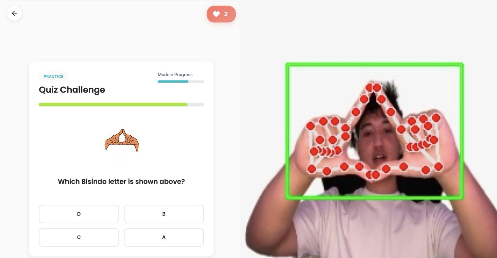
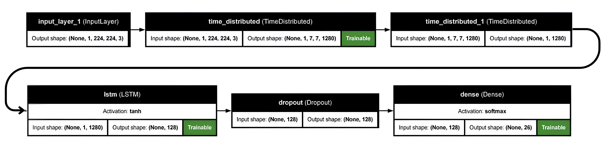
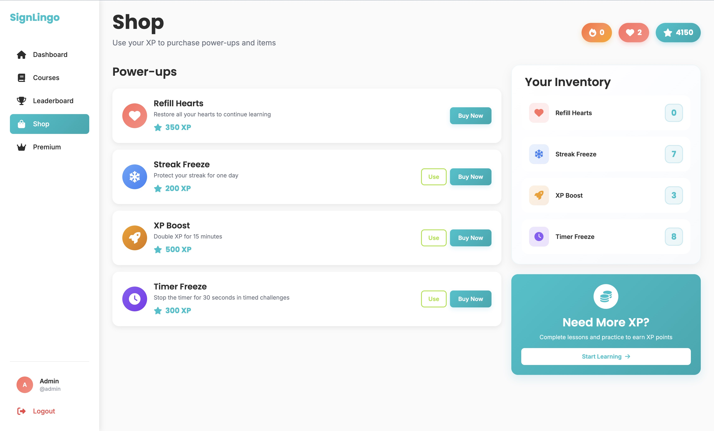

The Challenge
Learning sign language in Indonesia is prohibitively expensive due to the high cost of private tutors.
The only free alternatives are passive methods like static videos, where learners receive no feedback on
whether they are signing correctly.
Humans are social creatures, and I believe communication is a fundamental right—being disabled should
not mean being disconnected from society. However, while modern Computer Vision is accurate, it
typically requires high computational power that the average Indonesian, often relying on budget
devices, simply does not possess.
The Solution
We built SignLingo to make learning accessible to everyone, everywhere. Since it is web-based, anyone can access it easily. To solve the hardware constraint, I researched and implemented a specialized lightweight Hybrid CNN-LSTM architecture. This ensures high accuracy without the need for expensive GPUs, allowing the AI to act as a personal tutor that gives instant feedback directly in the browser.
My Role & Leadership
As the Team Leader and Lead Developer, my journey with SignLingo started from a simple yet powerful idea: making sign language education accessible. Leading a team of 10 talented developers, I navigated the challenges of coordinating our efforts from initial research to the final deployment. I was responsible for guiding our architectural decisions, mentoring team members, and ensuring our vision translated into a robust, working application. The collaborative spirit and shared passion of our team were the driving forces behind turning SignLingo from a concept into reality.

Me and the team behind SignLingo.
The SignLingo Ecosystem
A holistic, two-part platform designed to combine state-of-the-art AI inference with an engaging user experience.

Real-time inference and active predictions
Real-Time Landmark Detection
-
Ultra-Low Latency: Inference times of 40–50ms for seamless sign language translation.
-
Robust Tracking: Accurate landmark detection even in low-light and cluttered visual backgrounds.
-
Spatial-Temporal Logic: Combines spatial point coordinates extracted securely using MediaPipe with temporal dynamics.
Key Technical Architecture
To achieve high performance on constrained devices, we designed a lightweight hybrid architecture. We utilized spatial landmarks extracted and fed them into a sequential network structure. For an in-depth dive into the methodology, data processing, and evaluation metrics, you can read my connected research paper.

Hybrid CNN-LSTM Architecture overview
-
Hybrid Model Approach: We utilized MobileNetV2 for efficient spatial feature extraction combined with LSTM to capture the temporal gestures dynamics over time.
-
Optimized for Low-Resource: By applying L2 regularization and post-training quantization, we compressed the model to under 25MB, enabling operation on 4GB RAM devices.
Gamified Learning
To move away from boring, passive learning, we designed SignLingo to be entertaining. We infused interactive "Duolingo-style" mechanics to keep users engaged while our AI acts as a private tutor giving instant feedback on their gestures.

Personalized user dashboard
-
Daily Streaks & EXP: Keep motivation high by tracking continuous learning days and rewarding experience points.
-
Health System: A forgiving yet challenging life system requiring active performance accuracy.
-
Leaderboards: Compete with friends and the broader community for the top spot globally.
The Outcome
The optimized model achieved 95.30% validation accuracy on the BISINDO alphabet. With an inference time of just 40–50 milliseconds, the project successfully proved that inclusive communication technology can be made accessible to low-resource communities.
Future Works
The journey with SignLingo doesn't stop here. Currently, I am expanding the system to support Korean Sign Language (KSL) during my exchange program at Sungkyunkwan University (SKKU). Furthermore, for my undergraduate thesis, I am actively upgrading the core model architecture from the current CNN-LSTM approach to a more efficient MediaPipe-GRU hybrid, aiming to further decrease latency while retaining high spatial-temporal accuracy.